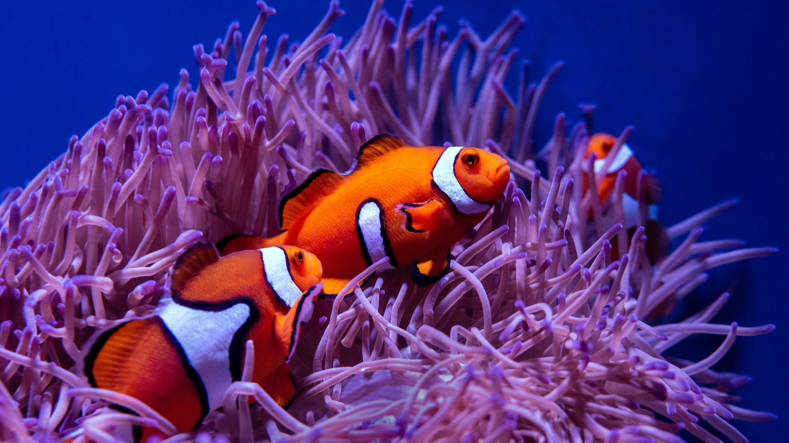
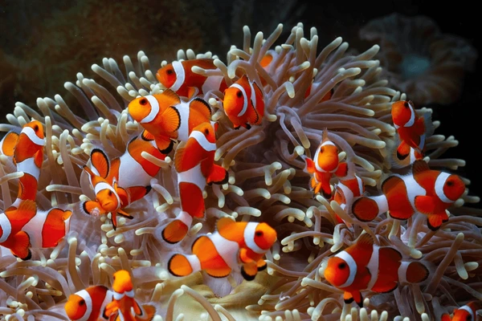
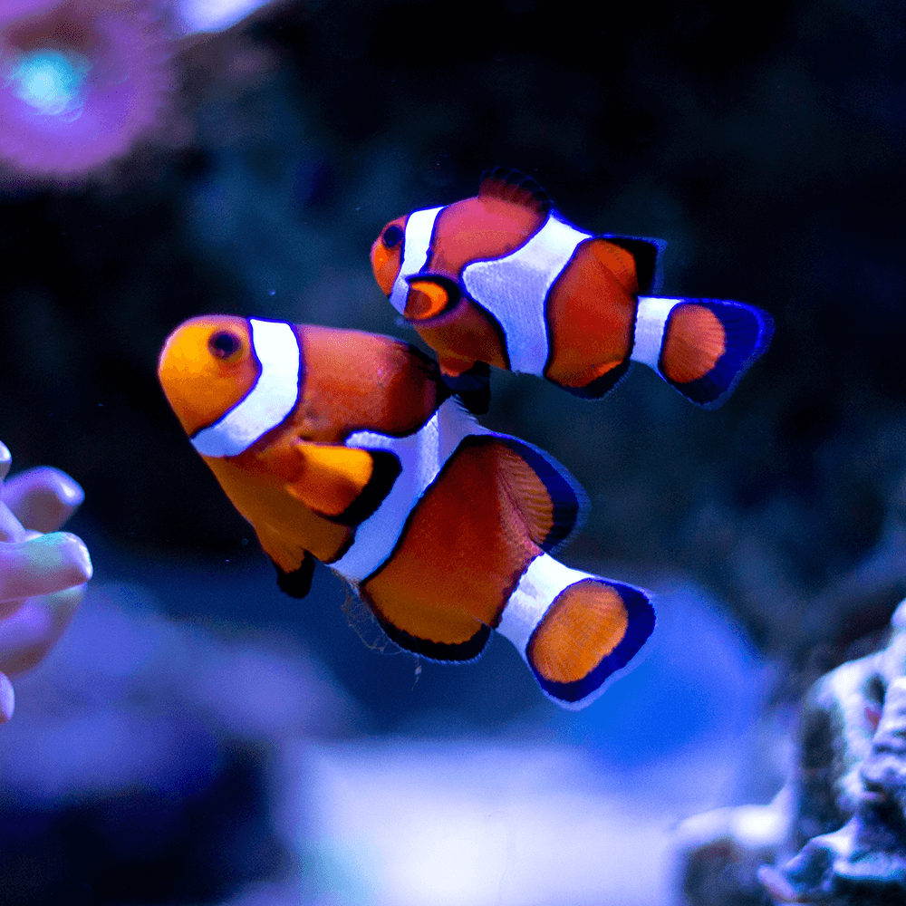
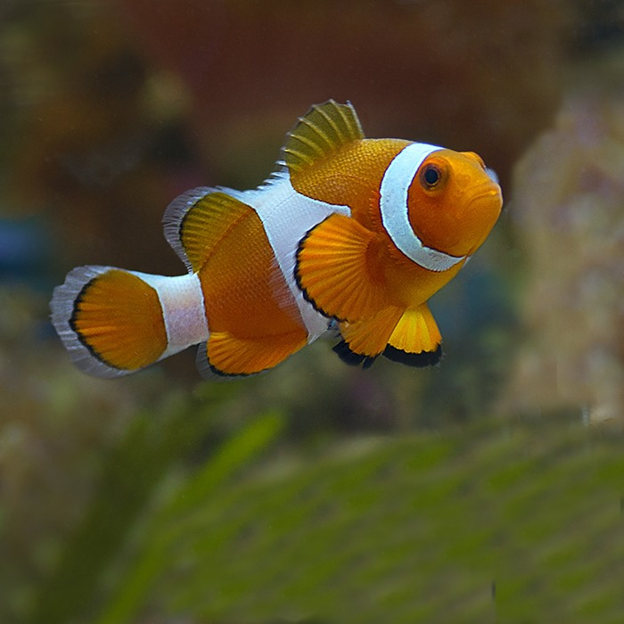
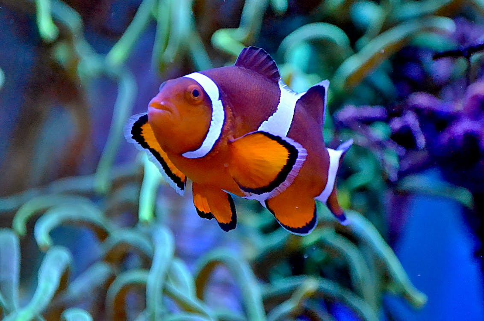
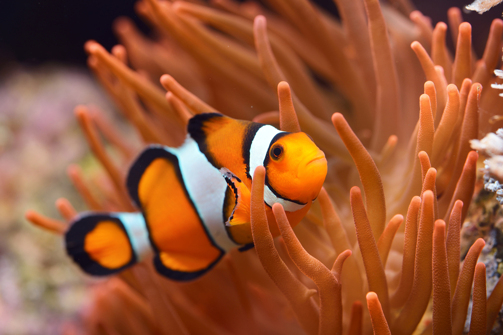
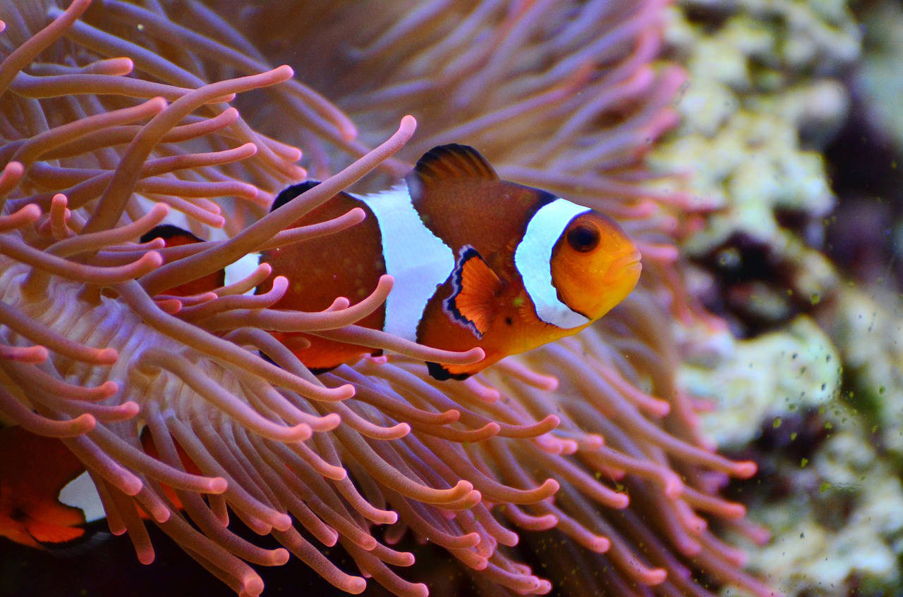

The Ocellaris Clownfish (Amphiprion ocellaris) is a small, brightly colored fish native to the coral reefs of the Indo-Pacific region in the Pacific Ocean. Famous for their orange bodies with white stripes outlined in black, these fish have a symbiotic relationship with sea anemones, which protect them from predators. Ocellaris clownfish are popular in the aquarium trade due to their vibrant appearance and engaging behavior. They feed primarily on algae, plankton, and small invertebrates.







